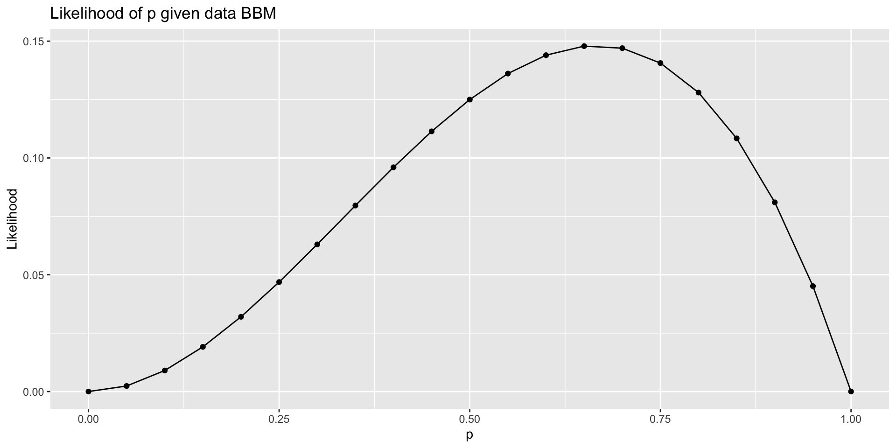

Maximum likelihood estimation
Mar 03, 2026
Announcements
Lab 05 due TODAY at 11:59pm
March 20 - 22: ASA DataFest at Duke
- Learn more and register: https://dukestatsci.github.io/datafest/#signup
Topics
Identifying linear models
Likelihoods
Maximum likelihood estimation (MLE)
MLE for linear regression
Linear model
Is a model with log-transformed response and/or predictor still a “linear” model?
“Linear” model
What does it mean for a model to be a “linear” model?
Linear models are linear in the parameters, i.e. given an observation \(y_i\)
\[ y_i = \beta_0 + \beta_1f_1(x_{i1}) + \dots + \beta_pf_p(x_{ip}) + \epsilon_i \]
The functions \(f_1, \ldots, f_p\) can be non-linear as long as \(\beta_0, \beta_1, \ldots, \beta_p\) are linear (additive and not transformed)
Identify the linear models
\(y_i = \beta_0 + \beta_1x_{i1} + \beta_2x_{i1}^2 + \beta_3x_{i2} + \epsilon_i\)
\(y_i = \beta_1x_{i1} + \beta_2x_{i2} + \beta_3x_{i1}x_{i2} + \epsilon_i\)
\(y_i = \beta_0 + \beta_1\sin(x_{i1} + \beta_2x_{i2}) + \beta_3x_{i3} + \epsilon_i\)
\(y_i = \beta_0 + \beta_1e^{x_{i1}} + \beta_2e^{x_{i2}} + \epsilon_i\)
\(y_i =e^{(\beta_0 + \beta_1x_{i1} + \beta_2x_{i2} + \beta_3x_{i3})} + \epsilon_i\)
🔗 Submit response: https://forms.office.com/r/sBjWF7jZ05
Maximum likelihood estimation
Motivation
- We’ve discussed how to find the estimators of \(\boldsymbol{\beta}\) and \(\sigma^2_{\epsilon}\) for the model
\[ \mathbf{y} = \mathbf{X}\boldsymbol{\beta} + \boldsymbol{\epsilon}, \hspace{10mm} \boldsymbol{\epsilon} \sim N(0, \sigma^2_\epsilon\mathbf{I}) \]using least-squares estimation
Today we will introduce another way to find these estimators - maximum likelihood estimation.
We will see the least-squares estimator is equal to the maximum likelihood estimator when certain assumptions hold
Maximum likelihood estimation
Example: Basketball
Suppose the a basketball player shoots the ball, such that the probability of making the basket (successfully making the shot) is \(p\)
What is the probability distribution for this random phenomenon?
Suppose the probability is \(p = 0.5\). What is the probability the player makes a single basket, given this value of \(p\)?
Suppose the probability is \(p = 0.8\). What is the probability the player makes a single basket, given this value of \(p\)?
Three basketball shots
Suppose the player shoots the ball three times. They are all independent and the player has the same probability \(p\) of making each basket.
Let \(B\) represent a made basket, and \(M\) represent a missed basket. The player shoots the ball three times with the outcome \(BBM\).
Suppose the probability is \(p = 0.5\). What is the probability of observing the data \(BBM\), given this value of \(p\)?
Suppose the probability is \(p = 0.3\). What is the probability of observing the data \(BBM\), given this value of \(p\) ?
Three basketball shots
Suppose the player shoots the ball three times. They are all independent and the player has the same probability \(p\) of making each basket.
The player shoots the ball three times with the outcome \(BBM\).
New question: What parameter value of \(p\) do you think maximizes the probability of observing this data?
We will use a likelihood function to answer this question.
Likelihood
A likelihood function is a measure of how likely we are to observe our data under each possible value of the parameter(s)
Note that this is not the same as the probability function.
Probability function: Fixed parameter value(s) + input possible outcomes
- Given \(p=0.8\) , what is the probability of observing \(BBM\) in three basketball shots?
Likelihood function: Fixed data + input possible parameter values
- Given we’ve observed \(BBM\), what is the most plausible value of \(p\)?
Likelihood: Three basketball shots
The likelihood function for the probability of a basket \(p\) given we observed \(BBM\) when shooting the ball three independent times \[ L(p|BBM) = p \times p \times (1 - p) \]
Thus, if the likelihood for \(p = 0.8\) is
\[ L(p = 0.8|BBM) = 0.8 \times 0.8 \times (1 - 0.8) = 0.128 \]
Likelihood: Three basketball shots
What is the general formula for the likelihood function for \(p\) given the observed data \(BBM\)?
How does assuming independence simplify things?
How does having identically distributed data simplify things?
Likelihood: Three basketball shots
The likelihood function for \(p\) given the data \(BBM\) is
\[ L(p|BBM) = p \times p \times (1 - p) = p^2 \times (1 - p) \]
We want of the value of \(p\) that maximizes this likelihood function, i.e., the value of \(p\) that is most likely given the observed data.
The process of finding this value is maximum likelihood estimation.
There are three primary ways to find the maximum likelihood estimator
Approximate using a graph
Using calculus
Numerical approximation
Finding the MLE using graphs

What do you think is the approximate value of the MLE of \(p\) given the data?
Finding the MLE using calculus
Find the MLE using the first derivative of the likelihood function.
This can be tricky because of the product rule, so we can maximize the log(Likelihood) instead. The same value maximizes the likelihood and log(Likelihood).
Use calculus to find the MLE of \(p\) given the data \(BBM\).
Shooting the ball \(n\) times
Suppose the player shoots the ball \(n\) times. They are all independent and the player has the same probability \(p\) of making each one.
Suppose the player makes \(k\) baskets out of the \(n\) shots. This is the observed data.
- What is the formula for the probability distribution to describe this random phenomenon?
- What is the formula for the likelihood function for \(p\) given the observed data?
- For what value of \(p\) do we maximize the likelihood given the observed data? Use calculus to find the response.
MLE in linear regression
Why maximum likelihood estimation?
“Maximum likelihood estimation is, by far, the most popular technique for deriving estimators.” (Casella and Berger 2024, 315)
MLEs have nice statistical properties (more on this next class)
Consistent
Efficient
Asymptotically normal
Note
Under the normality assumption, the least squares estimator is the maximum likelihood estimator for \(\beta\). Therefore, it has all the properties of the MLE.
Linear regression
Recall the linear model
\[ \mathbf{y} = \mathbf{X}\boldsymbol{\beta} + \boldsymbol{\epsilon}, \hspace{10mm} \boldsymbol{\epsilon} \sim N(\mathbf{0}, \sigma^2_{\epsilon}\mathbf{I}) \]
- We have discussed least-squares estimation to find \(\hat{\boldsymbol{\beta}}\) and \(\hat{\sigma}_\epsilon^2\)
- We have used the fact that \(\hat{\boldsymbol{\beta}} \sim N(\boldsymbol{\beta}, \sigma^2_{\epsilon}(\mathbf{X}^\mathsf{T}\mathbf{X})^{-1})\) when doing hypothesis testing and confidence intervals.
- Now we will discuss how we know \(\hat{\boldsymbol{\beta}}\) is normally distributed, as we introduce MLE for linear regression
Simple linear regression model
Suppose we have the simple linear regression (SLR) model
\[ y_i = \beta_0 + \beta_1x_i + \epsilon_i, \hspace{10mm} \epsilon_i \sim N(0, \sigma^2_{\epsilon}) \]
such that \(\epsilon_i\) are independently and identically distributed.
We can write this model in the form below and use this to find the MLE
\[ y_i | x_i \sim N(\beta_0 + \beta_1 x_i, \sigma^2_{\epsilon}) \]
Side note: Normal distribution
Let \(Z\) be a random variable, such that \(Z \sim N(\mu, \sigma^2)\). Then the probability function is
\[ P(Z = z | \mu, \sigma^2) = \frac{1}{\sqrt{2\pi\sigma^2}}\exp\Big\{-{\frac{1}{2\sigma^2}(z - \mu)^2}\Big\} \]
SLR: Likelihood for \(\beta_0, \beta_1, \sigma^2_{\epsilon}\)
The likelihood function for \(\beta_0, \beta_1, \sigma^2_{\epsilon}\) is
\[ \begin{aligned} L(\beta_0, \beta_1, \sigma^2_{\epsilon} &| x_1, \ldots, x_n, y_1, \ldots, y_n) \\ &= p(y_1|x_1, \beta_0, \beta_1, \sigma^2_{\epsilon}) \dots p(y_n|x_n, \beta_0, \beta_1, \sigma^2_{\epsilon}) \\[5pt] & = \class{fragment}{\prod_{i=1}^n p(y_i | x_i, \beta_0, \beta_1, \sigma^2_{\epsilon})} \\[5pt] &= \class{fragment}{\prod_{i=1}^n \frac{1}{\sqrt{2\pi\sigma_ \epsilon^2}}\exp\Big\{{-\frac{1}{2\sigma_\epsilon^2}(y_i - [\beta_0 + \beta_1x_i])^2}\Big\}} \\[10pt] & = \class{fragment}{(2\pi\sigma^2_{\epsilon})^{-\frac{n}{2}}\exp\Big\{-\frac{1}{2\sigma^2_{\epsilon}}\sum_{i=1}^n(y_i - \beta_0 - \beta_1x_i)^2\Big\}} \end{aligned} \]
Log-Likelihood for \(\beta_0, \beta_1, \sigma^2_{\epsilon}\)
The log-likelihood function for \(\beta_0, \beta_1, \sigma^2_{\epsilon}\) is
\[ \begin{aligned} \log &L(\beta_0, \beta_1, \sigma^2_{\epsilon} | x_1, \ldots, x_n, y_1, \ldots, y_n) \\[8pt] & = \class{fragment}{\log\Big((2\pi\sigma^2_{\epsilon})^{-\frac{n}{2}}\exp\Big\{-\frac{1}{2\sigma^2_{\epsilon}}\sum_{i=1}^n(y_i - \beta_0 - \beta_1x_i)^2\Big\}\Big)} \\[8pt] & = \class{fragment}{-\frac{n}{2}\log(2\pi\sigma^2_{\epsilon}) -\frac{1}{2\sigma^2_{\epsilon}}\sum_{i=1}^n(y_i - \beta_0 - \beta_1x_i)^2} \end{aligned} \]
MLE for \(\beta_0\)
1️⃣ Take derivative of \(\log L\) with respect to \(\beta_0\) and set it equal to 0
\[ \frac{\partial \log L}{\partial \beta_0} = -\frac{2}{2\sigma^2_\epsilon}\sum_{i=1}^n (y_i - \beta_0 - \beta_1x_i)(-1) = 0 \]
MLE for \(\beta_0\)
2️⃣ Find the \(\tilde{\beta}_0\) that satisfies the equality on the previous slide
After a few steps…
\[ \begin{aligned} &\Rightarrow \class{fragment}{\sum_{i=1}^ny_i - n\tilde{\beta}_0 - \tilde{\beta}_1\sum_{i=1}^n x_i = 0} \\[8pt] &\Rightarrow \class{fragment}{\sum_{i=1}^ny_i - \tilde{\beta}_1\sum_{i=1}^n x_i = n\tilde{\beta}_0} \\[8pt] &\Rightarrow \class{fragment}{ \frac{1}{n}\sum_{i=1}^ny_i - \frac{1}{n}\tilde{\beta}_1\sum_{i=1}^n x_i = \tilde{\beta}_0} \end{aligned} \]
MLE for \(\beta_0\)
3️⃣ We can use the second derivative to show we’ve found the maximum
\[ \frac{\partial^2 \log L}{\partial \beta_0^2} = -\frac{n}{2\tilde{\sigma}^2_\epsilon} < 0 \]
Therefore, we have found the maximum. Thus, MLE for \(\beta_0\) is
\[ \tilde{\beta}_0 = \bar{y} - \tilde{\beta}_1\bar{x} \]
Note that \(\tilde{\beta}_0\) is equal to \(\hat{\beta}_0\), the least-squares estimate
MLE for \(\beta_1\) and \(\sigma^2_{\epsilon}\)
We can use a similar process to find the MLEs for \(\beta_1\) and \(\sigma^2_{\epsilon}\)
\[
\tilde{\beta}_1 = \frac{\sum_{i=1}^n (y_i - \bar{y})(x_i - \bar{x})}{\sum_{i=1}^n(x_i - \bar{x})^2}
\]
\[ \tilde{\sigma}^2_{\epsilon} = \frac{\sum_{i=1}^n(y_i - \tilde{\beta}_0 - \tilde{\beta}_1x_i)^2}{n} = \frac{\sum_{i=1}^ne_i^2}{n} \]
Note: \(\tilde{\beta}_1 = \hat{\beta}_1\) and \(\tilde{\sigma}^2_{\epsilon} \approx \hat{\sigma}^2_{\epsilon}\)
MLE in matrix form
MLE for linear regression in matrix form
\[
\begin{aligned}
L(\boldsymbol{\beta}, \sigma^2_{\epsilon} | \mathbf{X}, \mathbf{y}) &= (2\pi)^{-n/2}|\text{det}(\sigma^2_\epsilon \mathbf{I})|^{-1/2}\exp\Big\{-\frac{1}{2}(\mathbf{y} - \mathbf{X}\boldsymbol{\beta})^\mathsf{T}(\sigma^2_{\epsilon}\mathbf{I})^{-1}(\mathbf{y} - \mathbf{X}\boldsymbol{\beta})\Big\} \\[8pt]
& = \frac{1}{(2\pi)^{n/2}\sigma^n_{\epsilon}}\exp\Big\{-\frac{1}{2\sigma^2_{\epsilon}}(\mathbf{y} - \mathbf{X}\boldsymbol{\beta})^\mathsf{T}(\mathbf{y} - \mathbf{X}\boldsymbol{\beta})\Big\}
\end{aligned}
\]
\[ \begin{aligned} \log L(\boldsymbol{\beta}, \sigma^2_\epsilon &| \mathbf{X}, \mathbf{y}) \\ & = -\frac{n}{2}\log(2\pi) - n \log(\sigma_{\epsilon}) - \frac{1}{2\sigma^2_{\epsilon}}(\mathbf{y} - \mathbf{X}\boldsymbol{\beta})^\mathsf{T}(\mathbf{y} - \mathbf{X}\mathbf{\beta}) \end{aligned} \]
- For a fixed value of \(\sigma_\epsilon\) , we know that \(\log L\) is maximized when what is true about \((\mathbf{y} - \mathbf{X}\boldsymbol{\beta})^\mathsf{T}(\mathbf{y} - \mathbf{X}\boldsymbol{\beta})\) ?
- What does this tell us about the relationship between the MLE and least-squares estimator for \(\boldsymbol{\beta}\)?
Putting it all together
The MLE \(\tilde{\boldsymbol{\beta}}\) is equivalent to the least-squares estimator \(\hat{\boldsymbol{\beta}}\) , when the errors follow independent and identical normal distributions
MLEs have nice properties (consistency, efficiency, normality), so this means the least-squares estimator \(\hat{\mathbf{\boldsymbol{\beta}}}\) inherits all the nice properties of MLEs
The MLE \(\tilde{\sigma}^2_{\epsilon}\) is approximately equal to the least-squares estimator \(\hat{\sigma}^2_\epsilon\). When \(n >> p\), the difference is trivial
Next class
Properties of estimators
No prepare assignment